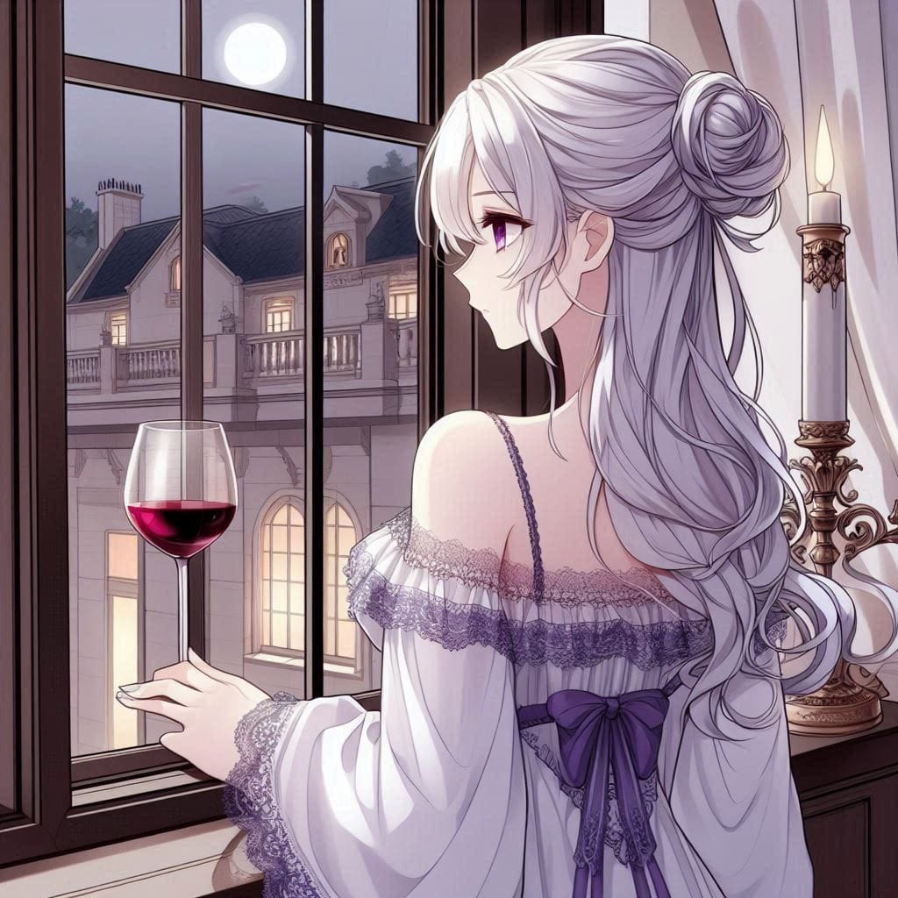

The rulers watched, their expressions unreadable, as the aura master faced the woman he had dared to insult. Deaus, brimming with confidence, unleashed his power. Yet, Saintana moved with an elegance that belied her strength. Every strike he made was countered effortlessly. Every move she made was precise, calculated, and overwhelming.
In moments, it became clear. Deaus was no match for her. The duel ended as swiftly as it began, with Saintana standing victorious, unscathed, and Deaus lying defeated. She extended a hand to him, “Strength is not just power,” she said, her voice resonating through the arena. “It is wisdom, humility, and the ability to protect, not dominate.”

The arena filled with applause and happiness, yet Deaus remained trapped in a storm of inferiority. Saintana, ever perceptive, sensed his turmoil. She addressed the arena, her voice firm but not unkind.
“To restore balance and discipline, Deaus will receive his training under the guidance of my disciples,” she announced. “A woman skilled in combat will teach him the art of the sword. Another woman, an expert in etiquette, will refine his manners. And yet another noblewoman will impart the history and geography he has neglected.”Deaus’ cheeks flushed with embarrassment as the crowd murmured. The humiliation was profound, yet he bowed his head and accepted the punishment with a subdued, “Yes, Saintana.”
With that, the arena emptied, and preparations for the night’s banquet began.
The Night Banquet
The grand banquet hall shimmered with opulence. Representatives from every empire wore exclusive garments showcasing their cultural heritage and magical affinities. As the servants busied themselves with arrangements, the air buzzed with anticipation.
When Saintana entered the hallway, all eyes turned to her. She was breathtaking. Draped in a navy blue gown with a bold yet elegant design, it had minimal frills and shimmering netting that sparkled like stars at its edges. Her jewelry complemented the attire perfectly, accentuating her regal presence. Her flawless beauty and professional demeanor captivated everyone in the room.
As she walked through the hall, conversations hushed, and the rulers and nobles alike paid her silent homage. Saintana’s presence was a reminder of her unmatched authority and the grace with which she carried the weight of the empires.
After sharing light drinks and engaging in brief conversations with her guests, Saintana departed early to her chambers, leaving the banquet behind without explanation.


She freshened up and changed into her night garments, preparing for rest. Standing by the balcony with a glass of wine in hand, she sighed deeply, her unguarded expression betraying a rare vulnerability. Her cold, emotionless eyes stared into the distance, as if searching for someone—someone she desperately wanted to find. The grief and emptiness she hid from the world weighed heavily on her heart.
A cool breeze brushed through her silver hair as she lay down on her bed, placing a hand over her eyes. Sleep eluded her as her thoughts drifted to a promise made long ago. A voice echoed in her mind: “I will have the first dance with you. I promise.” Her eyes shot open, filled with unspoken sadness. In a voice heavy with longing, she whispered, “Where are you?”
It was true—Saintana had never danced with anyone at any banquet in the past ten years. It was yet another mystery about her, one no one dared to question.

She closed her eyes again, but her dreams offered no solace. Instead, they tore at her heart. She saw glimpses of a memory—laughter, a broken tree, a man’s hand clasped in hers, blood staining her legs, and flames engulfing the scene.
She awoke with a gasp, tears streaming down her face. “A dream after so long,” she murmured to herself, wiping the tears away before the maids could arrive. “I should never have opened my heart to you. You betrayed me.”
By the time the maids entered, Saintana had composed herself. Her face was as cold and emotionless as it had been the day before, the traces of her grief buried deep within.